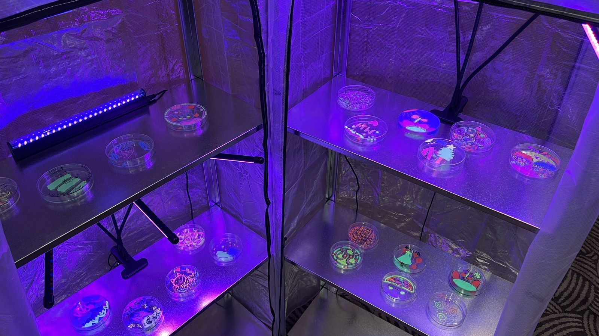
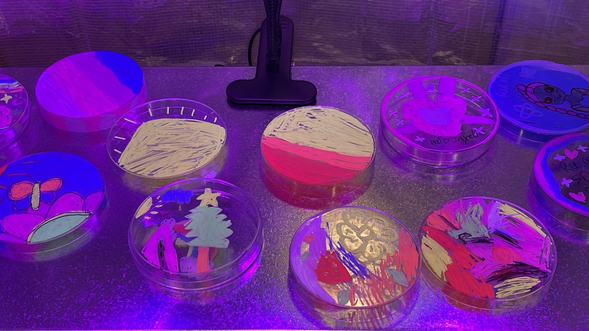

Two participatory works at WiT in Bangkok 2025. "Education is a change of state and a transition" tells the story of STEAM education through masks, which in ancient belief transform body, mind and status; visitors made their own paper masks, cutting, collaging and painting images of science, mathematics and technology. "Citizen Science, driven by community groups worldwide through open source" borrows the COVID-era sharing cabinet (ตู้ปันสุข), where people left things and took things from others. Here it became the Knowledge-Sharing Cabinet (ตู้ปันความรู้), where visitors made simple art objects for others to take and keep playing with.
